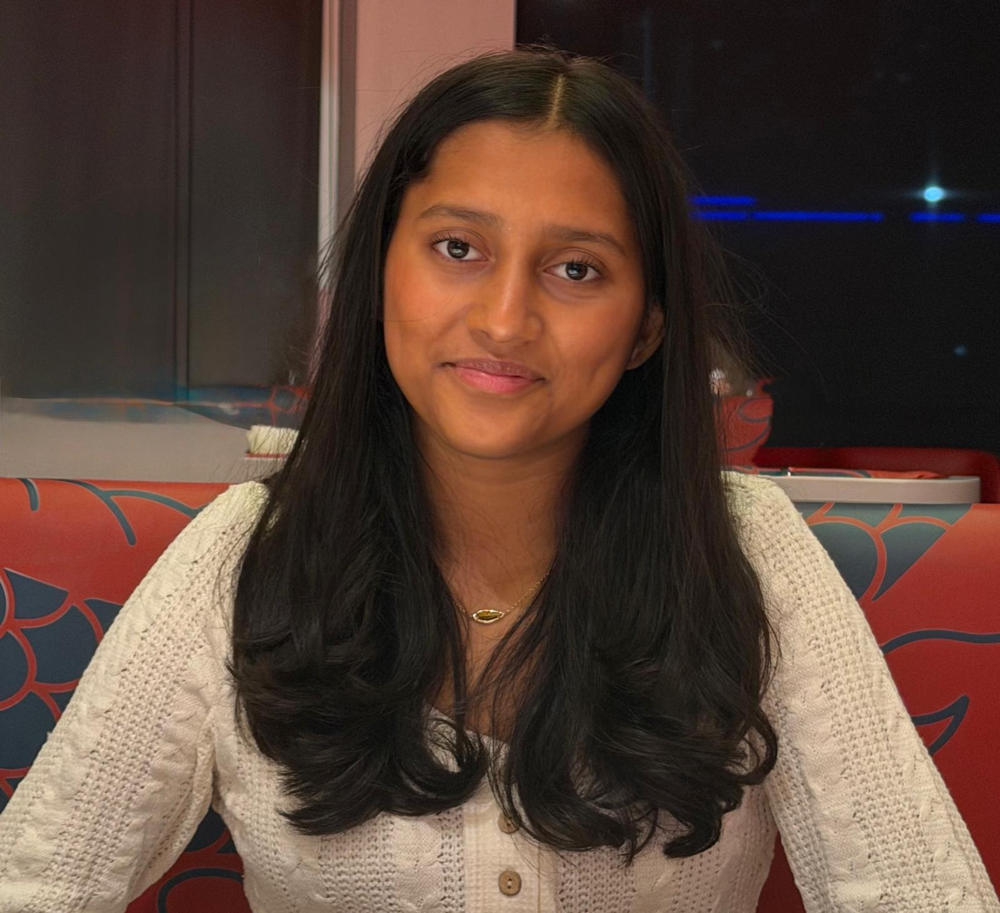

Student researcher in North Texas interested in medicine, the brain, philosophy, activism, and debate.

I'm a high school student in North Texas passionate about medicine, activism, and debate. I'm especially drawn to everything philosophical and related to the brain, which drives a lot of my research. Exploring how the brain works, and how external conditions shape human health, is what led me to build Too Hot, Too Far.
I also love exploring different viewpoints, which is why I'm drawn to debate and public-health policy. Rather than looking at medicine only inside a clinic, this project asks how geography, extreme weather, and transportation shape who can actually reach emergency and medical care when minutes matter.